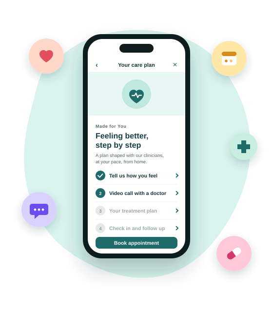

Product & Marketing Lead
Improving User Experience
A telehealth company in Europe was losing ground. Patient and clinician reviews were sinking, and an aging platform made every visit harder than it needed to be. As product and marketing lead, I set out to breathe new life into it: I started with the people who used it every day, rebuilt the experience around them, and made trust the heart of the relaunch.

What I Did
Listened First
People don't look for care on a good day. They are worried, busy or unsure where to turn. Background research, a survey and conversations showed me what they needed, and what made them hesitate before asking for help.
Mapped the Journey
With providers and patients, I mapped every step from the first worry to the follow-up, and removed the places where people felt lost.
Found One Message
One simple promise, backed by proof and benefits, in a voice that is warm, expert and easy to understand.
Led With Trust
Safety and privacy were built in, so I could promise people their care was in good hands.
Results
App Store rating.
Of patients helped within 30 minutes.
Point increase in Net Promoter Score.